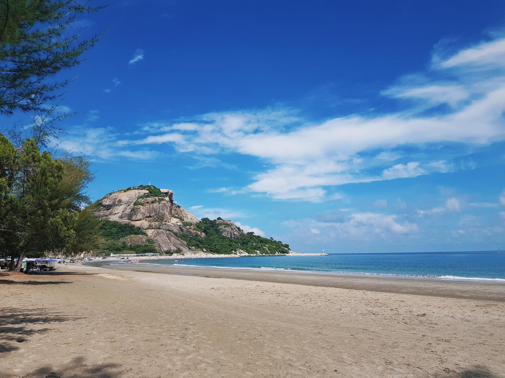
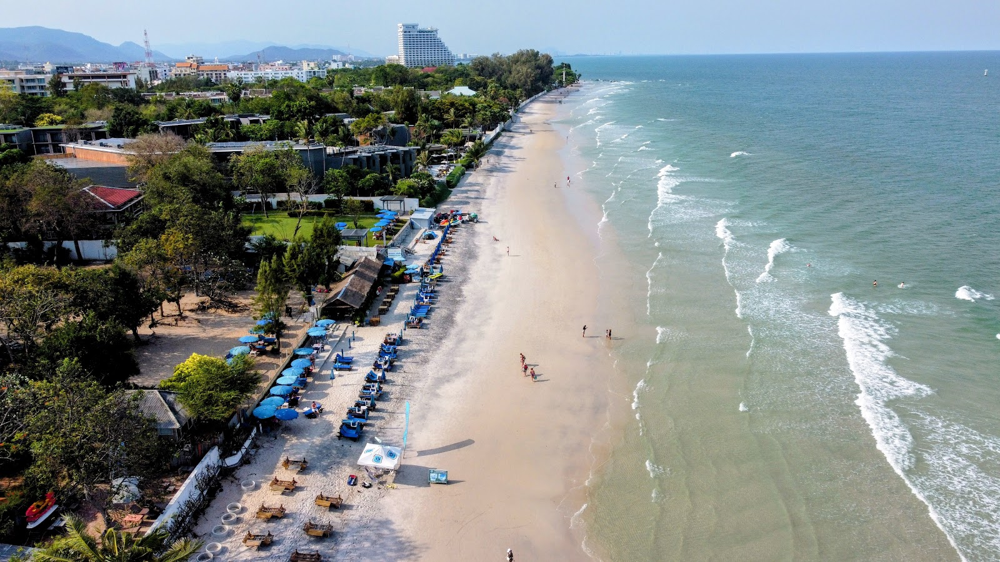
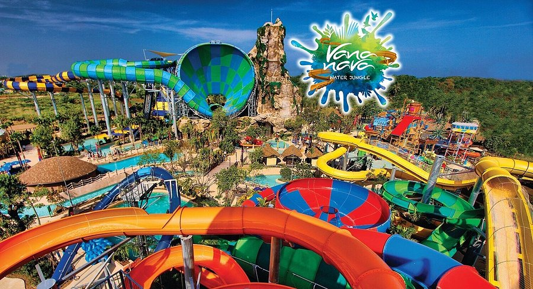
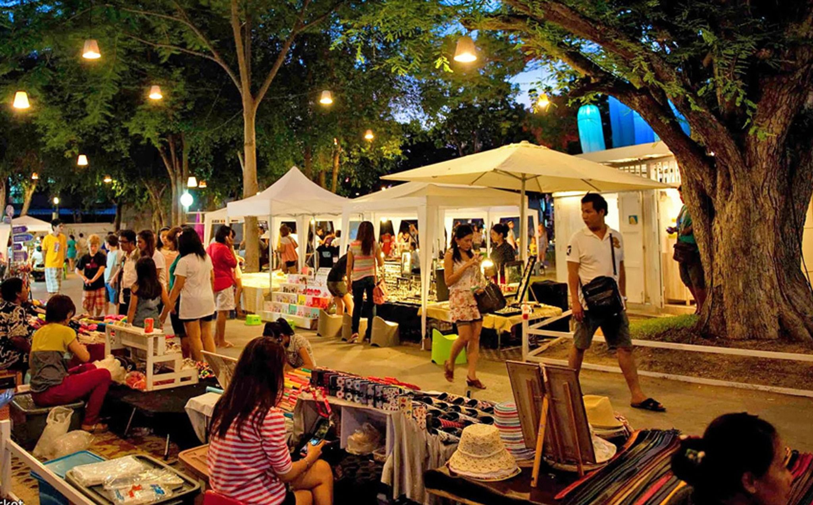
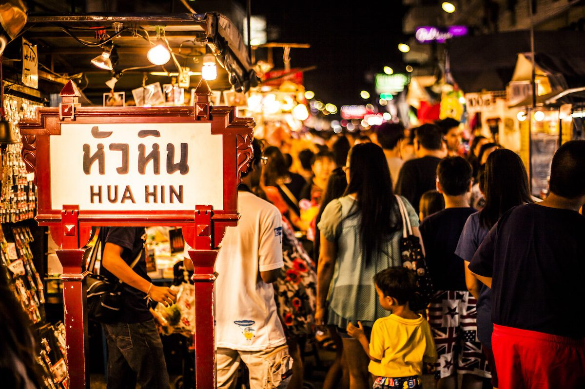
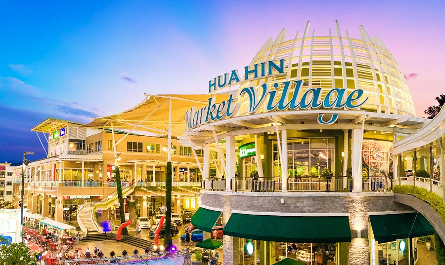
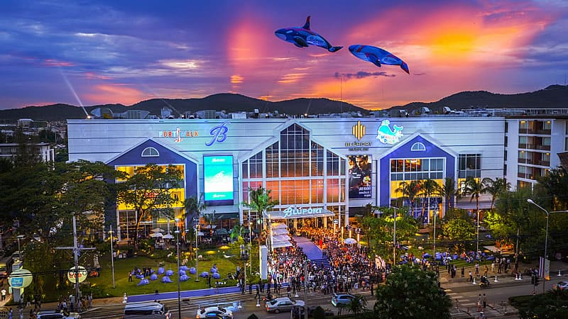
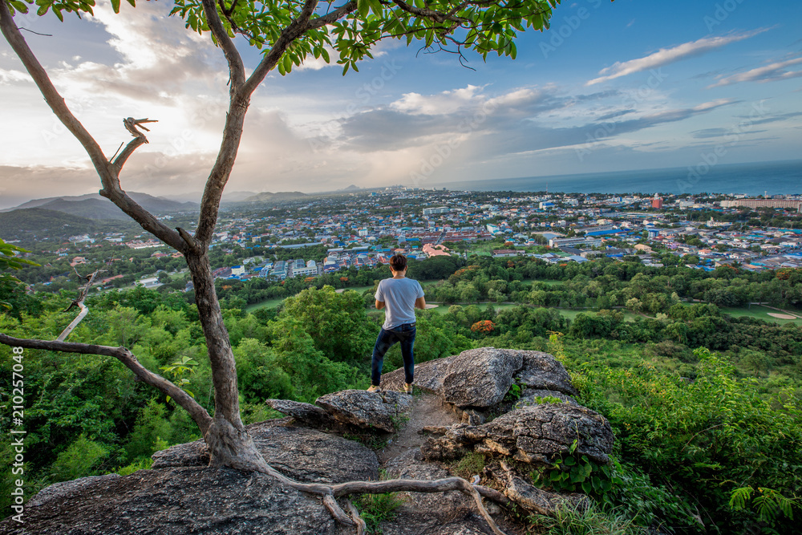
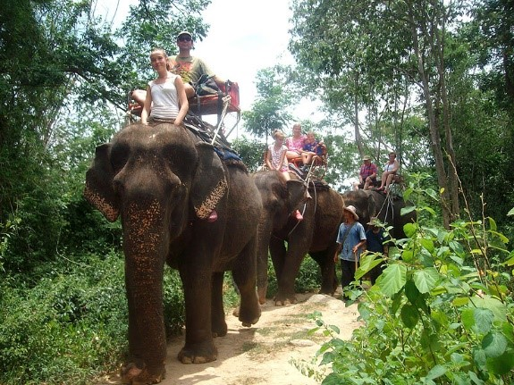

Hua Hin Spots
主催者検討用（写真付き）
ホアヒン近郊スポット一覧（写真＋運営メモ）
使い方：旅程設計の判断材料として、「誰向け」「運営難易度」「失敗しにくさ」で見比べる。
写真について：本ページは ./assets/ 配下のローカル画像を参照します。
例：./assets/spot-huahin-beach.jpg のように保存してください。

カオタキアップビーチ（Khao Takiab Beach）
家族向け / 失敗しにくい
砂浜が広く、休憩ポイント（カフェ/店）を挟みやすい。短時間でも“来た感”が出る。

ホアヒンビーチ（Hua Hin Beach）
近い / 導線づくり
中心エリアから近く、ビーチ沿いの“散歩＋カフェ”で満足を作りやすい。

ヴァナナヴァ・ウォーターパーク（Vana Nava）
子ども満足MAX / 体力消費
子ども満足度は最強。ただし体力・荷物・着替えで運営の手間が増える。

タマリンドマーケット（Tamarind Market）
到着夜の最適解
到着夜に“説明しすぎず”歓迎できる場所。食べて満足→寝る、が成立。

シカダマーケット（Cicada Market）
週末 / 雰囲気強い
週末の雰囲気づくりに強い。混雑しやすいので“時間短め”で設計が安全。

ナイトマーケット（Hua Hin Night Market）
毎晩 / 小分け合流
毎晩行ける“受け皿”。全員集合ではなく、自然合流の場として使うと強い。

マーケットヴィレッジ（Market Village）
冷房/トイレ/迷いにくい
家族運営の“安全基地”。暑さ・体調・買い物をまとめて吸収できる。

ブルーポート（BLÚPORT）
家族の受け皿 / 短時間でも成立
“暑さ回避＋快適”を担保する大型モール。短時間でも満足が作れる。

カオヒンレックファイ（Khao Hin Lek Fai｜展望台）
景色 / ただし温度差あり
景色は良いが、“登る/暑い/歩く”要素が入るので、全体向けには慎重に。

エレファントヴィレッジ（Elephant Village）
好みが割れる / 判断必要
興味がある人には強いが、価値観・好みが割れやすい。主催側で扱い方を要相談。